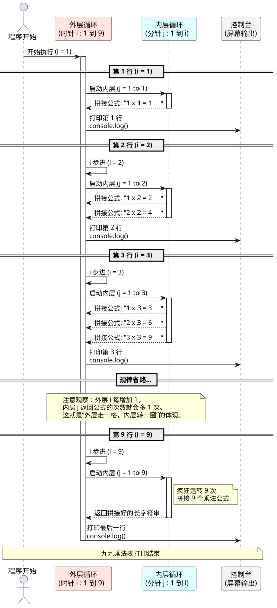

Ch 1：初识 JavaScript 与变量世界
今日目标：
-
搭建开发环境，消除对代码的恐惧。
-
安装 vscode 编辑器
-
直接在浏览器写 js 代码并运行
-
-
掌握变量的本质，理解“存储数据”的概念。
-
弄懂基本数据类型，特别是字符串与数字的区别。
-
完成项目初始化，输出第一行项目信息。
S1：核心精讲（4课时）
一：Hello World 与 开发环境
1. 什么是 JavaScript？（生活化讲解）
同学们，如果把网页比作一个人：
-
HTML 是人的骨架（身体结构）。
-
CSS 是人的皮肤和衣服（外观打扮）。
-
JavaScript 是人的灵魂和肌肉（动作、逻辑、交互）。
-
例子：你点击一个按钮，弹出一个窗口，这就是 JavaScript 在工作。
2. 开发环境搭建
-
工具：安装 VS Code（主流前端编辑器）。
-
插件：安装 "Chinese Language Pack"（汉化）和 "Live Server"（必须安装，用于实时刷新网页）。
-
浏览器：推荐 Chrome 浏览器、Firfox 浏览器。
3. 你的第一行代码
我们在 VS Code 中新建一个 hello-world.html，快捷键 ! + Tab 生成骨架。
<!DOCTYPE html>
<html lang="en">
<head>
<meta charset="UTF-8">
<title>我的第一个网页</title>
</head>
<body>
<!-- 内部脚本方式 -->
<script>
// 1. 控制台输出：这是程序员最爱用的调试方式
console.log("Hello World!");
console.log("欢迎来到JavaScript世界，我是你们的导师");
// 2. 弹窗输出：这是给用户看的（慎用，很烦人）
alert("程序启动！");
</script>
</body>
</html>实操演示：
-
右键
hello-world.html→ "Open with Live Server"。 -
按
F12打开开发者工具，点击 "Console"（控制台）面板。 -
重点：学会看控制台，这是 JS 开发者的“眼睛”。以后代码写错了，不要瞎猜，先看控制台报什么红字。
| 如果是使用内联方式写 js，建议将 <script> 放在 </body> 的上面，这样可以避免网页 DOM 未加载而产生 js 报错问题。 |
二：变量——数据的“盒子”
1. 变量的本质
变量就是一个带标签的盒子，用来装数据。
-
盒子里的东西 = 数据。
-
盒子上的标签 = 变量名。
2. 变量的声明与赋值
旧时代（不推荐）：var
新时代（ES6标准，必须遵守）：let（可变），const（不可变）。
代码演示：
// 场景：存钱罐
// let 声明的变量，以后可以改
let money = 100;
console.log("现在的存款是：", money); // 100
// 我花了20块买奶茶
money = money - 20;
console.log("花了20后，存款是：", money); // 80
// const 声明的变量，一旦赋值，打死不能改（常量）
const MY_NAME = "张三";
console.log("我的名字是：", MY_NAME);
// 错误演示：尝试修改常量（打开注释会报错）
MY_NAME = "李四"; // 报错：Assignment to constant variable.教学重点：
-
以后定义变量，先用
const，如果发现这个值后面需要改动（比如计数器、金额），再改成let。坚决不用var。 -
命名规范：
-
见名知意：
age比a好，userName比x好。 -
驼峰命名法：第一个单词首字母小写，后面单词首字母大写，如
studentScore。
-
三：数据类型——数据的“物种”
JavaScript 是弱类型语言，变量没有类型，值才有类型。
1. 基本数据类型
-
Number（数字）：整数、小数。
-
String（字符串）：被引号包裹的内容。
-
Boolean（布尔值）：真/假。
2. typeof 操作符
用来检测数据的类型。
代码演示：
// 1. Number 类型
let price = 99.9;
console.log(typeof price); // 输出: number
// 2. String 类型
let goodsName = "华为手机";
console.log(typeof goodsName); // 输出: string
// 重点陷阱：数字字符串
let fakeNumber = "100";
console.log(typeof fakeNumber); // 输出: string (它是披着数字皮的字符串！)
// 3. Boolean 类型
let isLogin = true; // true 表示真，false 表示假
console.log(typeof isLogin); // 输出: boolean3. Undefined 与 Null
-
Undefined：变量声明了但没赋值（盒子是空的，连空气都没有）。let name; console.log(typeof name); // 输出: undefined -
Null：变量赋值为空（盒子是空的，但是人为清空的）。let name = null; console.log(typeof name); // 输出类型: object console.log('name:', name); // null
四：字符串详解与模板字符串
1. 字符串拼接的痛点
以前我们要把变量放进字符串，很麻烦：
let name = "王五";
let age = 20;
// 以前的方式：用 + 号拼接，容易写错
let info = "我叫" + name + "，今年" + age + "岁。";
console.log(info);2. 模板字符串（ES6神器）
使用反引号 ` （键盘左上角ESC下面那个键）和 ${}。
代码演示
let name = "赵六";
let skill = "JavaScript";
// 模板字符串：保留格式，变量直接嵌入
let intro = `大家好，我是 ${name}。
我正在学习 ${skill}。
这节课真的"太充实了"！`;
console.log(intro);教学重点：强调反引号的便捷性，以后项目里全都要用这个，告别 + 号拼接字符串。
S2：实战演练与项目推进（4课时）
一：随堂实战案例
案例 1：个人信息卡片生成器
需求：定义变量存储姓名、年龄、性别、邮箱，最后在控制台打印出一张格式美观的名片。
参考代码：
// 1. 定义变量
const NAME = "李小明";
const GENDER = "男";
const AGE = 22;
const EMAIL = "lixiaoming@school.com";
// 2. 拼接字符串（使用模板字符串）
const CARD = `
================================
学 生 信 息 卡
--------------------------------
姓名：${NAME}
性别：${GENDER}
年龄：${AGE} 岁
邮箱：${EMAIL}
================================
`;
// 3. 输出
console.log(CARD);练习要求：学生修改自己的真实信息，观察输出结果。
案例 2：变量值交换的魔术
需求：有两个变量 a = 10, b = 20，如何交换它们的值，让 a 变成 20，b 变成 10？
方法一：空杯子法（传统）
let a = 10;
let b = 20;
console.log(`a 现在是: ${a}, b 现在是: ${b}`);
let temp; // 临时空杯子
temp = a; // 把 a 的水倒入 temp (temp=10, a空了)
a = b; // 把 b 的水倒入 a (a=20, b空了)
b = temp; // 把 temp 的水倒入 b (b=10)
console.log(`a 现在是: ${a}, b 现在是: ${b}`);方法二：数组解构法（更现代）
let a = 10;
let b = 20;
console.log(`现代写法 -> a: ${a}, b: ${b}`);
[a, b] = [b, a]; // 一行代码搞定交换
console.log(`现代写法 -> a: ${a}, b: ${b}`);二：贯穿项目推进——《易校园》初始化
场景：我们要开始搭建《易校园》二手交易平台的项目了。首先需要把平台的基础信息定义好。
步骤 1：创建项目结构
easy-campus，内部结构如下：easy-campus/
├── index.html
├── css/
│ └── style.css (暂时为空)
└── js/
└── main.js (我们今天的战场)
步骤 2：编写 main.js
/**
* 文件名：main.js
* 描述：易校园项目核心逻辑入口
* 作者：[Swot]
* 日期：2026-03-14 07:53:17
*/
// 这些值通常不会变，用 const
const PLATFORM_NAME = "易校园";
const VERSION = "0.0.1";
const AUTHOR = "JavaScript 训练营学员";
// 这些值后续可能会变，用 let
let currentUser = "游客";
let currentMoney = 0;
console.log(`======================`);
console.log(`欢迎进入【${PLATFORM_NAME}】二手交易平台`);
console.log(`当前版本：v${VERSION}`);
console.log(`开发者：${AUTHOR}`);
console.log(`当前用户：${currentUser}`);
console.log(`钱包余额：${currentMoney} 元`);
console.log(`======================`);
console.log("正在充值 100 元...");
// 这里演示算术运算符
currentMoney = currentMoney + 100;
console.log(`充值成功！当前余额：${currentMoney} 元`);步骤 3：HTML 引入 main.js
index.html 中引入这个脚本。<!-- 引入JS文件，注意放在 body 结束标签前 -->
<script src="./js/main.js"></script>步骤 4：运行与调试
-
使用 Live Server 打开。
-
打开控制台，查看输出是否符合预期。
-
尝试错误：故意修改
const PLATFORM_NAME = "新名字"，看看报错效果，加深对常量的理解。
作业
-
概念题：
let和const的最大区别是什么？什么情况下用const？ -
代码题：定义变量分别存储圆的半径、圆周率，计算圆的周长和面积，并在控制台输出结果（保留两位小数）。
-
提示：周长 = 2 * π * r，面积 = π * r * r。
-
-
项目扩展：在
main.js中添加一个新的变量isShopOpen（布尔值），判断店铺是否营业。-
如果是
true，在控制台输出“店铺营业中”； -
如果是
false，输出“店铺打烊了”。
-
可能会遇到文件路径错误（src="./js/main.js" 写错）、中英文符号切换（特别是分号 ; 和引号 "）、控制台找不到位置等问题。
解决这些细小的报错，是建立学习信心的关键。
|
Ch 2：运算符与流程控制——让程序学会判断
今日目标：
-
掌握运算符，特别是“赋值”与“比较”的区别。
-
理解逻辑运算符中的“短路”现象。
-
彻底掌握
if-else分支结构，写出有逻辑的代码。 -
在项目中实现“会员折扣计算”和“用户身份验证”功能。
一：运算符基础——不只是加减乘除
1. 算术运算符
-
基础：
+(加)、-(减)、*(乘)、/(除)。 -
重点：
%(取模/取余数)。 -
应用场景：判断奇偶数、判断倍数、获取数字的最后一位。
代码演示：
let num = 10;
console.log(num % 2); // 余数 0 -> 偶数
console.log(9 % 2); // 余数 1 -> 奇数
// 经典面试题：如何获取一个三位数 123 的个位数？
let number = 123;
console.log(number % 10); // 余数 32. 赋值运算符
-
=：把右边的值给左边（不是相等！）。 -
复合赋值：
+=,-=,*=,/=。
代码演示：
let money = 100;
// 我想存50块进去
// money = money + 50; // 传统写法最好理解
money += 50; // 简写，推荐！
console.log(money); // 1503. 自增自减运算符（难点）
-
++：自增 1 -
前置（
i`）与后置（`i）的区别：-
单独使用：效果一样，都是
i = i + 1。 -
是否参与表达式运算：
-
后置：先用后加。（先输出当前的值，再加 1）。
-
前置：先加后用。（先加 1，再输出新值）。
-
-
代码演示：
let a = 10;
console.log( a++ ); // 输出 10。因为先用了10，a 变成了11
console.log( a ); // 输出 11
let b = 10;
console.log(++b); // 输出 11。b 直接加 1 变成 11，再输出 b 的值教学提示：如果不确定，就分开写，不要为了省事写复杂代码导致 Bug。
二：比较运算符——真与假的较量
结果只有两个：true (真) 或 false (假)。
-
>,<,>=,⇐：数字比较。 -
雷区：
==与===的区别。-
==(双等)： 只比较值，会自动进行类型转换（默认行为，容易出 Bug）。 -
===(三等)：比较值和数据类型（全等，强烈推荐）。
-
代码演示：
let a = 10;
let b = "10";
// 雷区演示
console.log( a == b ); // true -> JS 把字符串 "10" 转成了数字 10 进行比较
console.log( a === b ); // false -> 数字 10 不全等于 字符串 "10"
// 结论：以后判断相等，无脑使用三个等号 `===`
console.log(1 === 1); // true
console.log(1 === 2); // false三：逻辑运算符——组合条件
1. 逻辑与 (AND) &&
-
口诀：一假则假。即整个表达式结果为假。
-
只有两边都为真，整个表达式结果才为真。
-
应用：比如“必须同时满足有 身份证且年满18岁 才能办卡”。
代码演示：
let hasID = true;
let isAdult = false;
// 办卡条件
let canApply = hasID && isAdult;
console.log(canApply); // false，因为未成年2. 逻辑或 (OR) ||
-
口诀：一真则真。
-
只要有一边为真，结果就为真。
-
应用：比如 “有优惠券或者会员卡 都可以打折”。
代码演示：
let hasCoupon = true;
let isVip = false;
// 打折条件
let canDiscount = hasCoupon || isVip;
console.log(canDiscount); // true3. 逻辑非 !
-
取反。
!true变false。
代码演示：
let hasCoupon = true;
// 优惠券取反
console.log(!hasCoupon); // false4. 短路运算（进阶重点）
-
&&短路：如果左边为假，右边不再执行（因为结果注定是假）。 -
||短路：如果左边为真，右边不再执行（因为结果注定是真）。
代码演示：
let num = 0;
// false && (右边代码不执行)
console.log('false && num++:', false && num++);
console.log(num); // 0，num++ 根本没运行
// true || (右边代码不执行)
console.log('true || num++:', true || num++);
console.log(num); // 0，num++ 根本没运行四：流程控制——If 分支结构
1. if 语句
如果条件为真，执行大括号里的代码块。
语法：
if (条件) {
// 执行代码
}2. if-else 语句
二选一。
场景：如果下雨带伞，否则带墨镜。
let weather = "下雨";
if (weather === "下雨") {
console.log("带伞");
} else {
console.log("带墨镜");
}3. if-else if-else 语句
多选一。
场景：成绩评价系统。
let score = 75;
if (score >= 90) {
console.log("优秀");
} else if (score >= 60) {
console.log("及格");
} else {
console.log("不及格，补考！");
}
// 输出：及格实战演练与项目推进
案例 1：闰年判断器
需求：用户输入一个年份，判断是否是闰年。
逻辑：
-
能被 4 整除且不能被 100 整除。
-
或者能被 400 整除。
(这两个条件是 “或” 的关系)
参考代码：
let year = 2024;
// 逻辑：(能被 4 整除 且 不能被 100 整除) 或者 (能被400整除)
// % 是取余，余数为 0 就是整除
let isLeap = (year % 4 === 0 && year % 100 !== 0) || (year % 400 === 0);
if (isLeap) {
console.log(`${year} 是闰年`);
} else {
console.log(`${year} 是平年`);
}案例 2：简易 ATM 取款机
需求：模拟 ATM 操作。余额 1000 元。输入取款金额。
-
如果取款金额
>余额，提示“余额不足”。 -
如果取款金额
⇐0，提示“输入错误”。 -
否则，取款成功，扣除余额并显示最新余额。
参考代码：
let balance = 1000;
let withdrawMoney = 500; // 试着改成 2000 或 -50 测试
// let withdrawMoney = 2000; // 试着改成 2000 或 -50 测试
// let withdrawMoney = -50; // 试着改成 2000 或 -50 测试
if (withdrawMoney <= 0) {
console.log("取款金额必须大于0");
}
else if (withdrawMoney > balance) {
console.log("余额不足！您的余额为：" + balance);
}
else {
// 取款成功
balance = balance - withdrawMoney; // 余额扣除
console.log(`取款成功！您取了 ${withdrawMoney} 元`);
console.log(`当前余额：${balance} 元`);
}二：贯穿项目推进——《易校园》业务逻辑
场景：现在我们要为《易校园》平台增加两个核心业务模块
-
会员折扣
-
登录验证
步骤 1：完善项目配置
打开 js/main.js，增加会员等级变量。
// ... 之前的代码 ...
let isVIP = true; // 是否是VIP会员
let vipLevel = 1; // VIP等级 1:普通会员 2:超级会员步骤 2：实现“商品折扣计算器”*
业务规则
-
如果是 超级会员 (vipLevel === 2)，打 8 折。
-
如果是 普通会员 (vipLevel === 1)，打 9 折。
-
如果不是会员，原价。
// 定义商品原价
let price = 100;
// 计算逻辑
let finalPrice = price; // 默认原价
if (vipLevel === 2) {
finalPrice = price * 0.8; // 8折
console.log("尊贵的超级会员，您享受8折优惠！");
}
else if (vipLevel === 1) {
finalPrice = price * 0.9; // 9折
console.log("尊敬的会员，您享受9折优惠！");
}
else {
console.log("您暂无折扣，建议开通会员省钱哦~");
}
console.log(`原价：${price}元，折后价：${finalPrice}元`);步骤 3：实现“登录身份验证”
业务规则：
-
用户必须是会员 (
isVIP === true) -
并且账户余额必须大于 0 才能进入“会员专区”。
代码编写：
// 利用逻辑运算符 &&
if (isVIP && currentMoney > 0) {
console.log("验证通过！欢迎进入会员专属区！");
// 这里后续会跳转页面，现在只打印日志
}
else {
console.log("您不是会员或余额不足，无法访问该板块！");
}步骤 4：断点调试实战
-
强制要求：所有学生必须在浏览器中，在
if (vipLevel === 2)这一行打上断点。 -
操作：
-
刷新页面。
-
程序暂停。
-
在控制台手动修改变量：
vipLevel = 1。 -
点击“下一步”，观察代码走了哪个分支。
-
目的：让学生明白，代码是“活”的，可以通过调试改变运行轨迹。
作业
-
概念题：请解释
=、==、===三者的区别。为什么我们推荐使用===？ -
代码题：编写一个程序，输入一个数字
num。-
如果是 3 的倍数，输出“Fizz”。
-
如果是 5 的倍数，输出“Buzz”。
-
如果既是 3 的倍数又是 5 的倍数，输出“FizzBuzz”。
-
都不是，输出原数字。
-
-
项目扩展：在
main.js中，增加一个“运费计算”逻辑。-
规则：如果商品总价 (
finalPrice) 大于 99 元，免运费； -
否则收 10 元运费。
-
最后输出“实付金额”。
-
“断点调试” 环节至关重要，能理解“代码执行顺序”，通过断点一步一步看，能直观地展示
if-else 是如何跳转的。务必亲手操作一遍断点。
|
Ch 3：循环结构与算法入门——让代码跑起来
今日目标：
-
理解循环的意义：解决重复性工作。
-
掌握
for循环的三要素，并通过断点调试看清执行轨迹。 -
学会使用
while循环处理不确定次数的重复。 -
在项目中利用循环批量生成测试数据，告别手动敲数据。
一：循环初探——为什么要循环？
1. 生活中的循环
-
场景：操场跑圈，跑5圈。
-
如果不写循环：
console.log("跑第1圈");
console.log("跑第2圈");
console.log("跑第3圈");
console.log("跑第4圈");
console.log("跑第5圈");问题：如果要跑 100 圈或者 10000 圈呢？复制粘贴会累死人，而且代码极其丑陋。
2. for 循环语法
语法结构：
for (初始化变量; 条件表达式; 操作表达式) {
// 循环体（重复执行的代码）
}生活化解读：
-
初始化变量：起跑线准备（比如：圈数计数器
i = 1）。 -
条件表达式：判断是否跑完（比如：
i ⇐ 5吗？如果是，继续跑）。 -
操作表达式：跑完一圈后的动作（比如：圈数加1，
i++）。 -
循环体：跑步的动作本身。
代码演示：跑 5 圈
for (let i = 1; i <= 5; i++) {
console.log(`正在跑第 ${i} 圈`);
}
console.log("跑完了，累死我了！");二：断点调试——看清循环的“心跳”
重点：初学者最晕循环，不知道代码执行顺序。必须用断点调试！
实操演示
-
在代码行号
for (let i = 1; …)处点击，打上断点。 -
刷新页面，代码暂停。
-
点击“下一步”按钮，观察：
-
第1次：
i被创建，值为1 → 判断条件1⇐5(真) → 执行循环体 →i变成 2。 -
第2次：判断条件
2⇐5(真) → 执行循环体 →i变成3。 -
…
-
最后：当
i变成6 → 判断条件6⇐5(假) → 跳出循环。
-
常见死循环（千万别写）：
// 条件永远为真，浏览器会卡死
for (let i = 1; i > 0; i++) {
console.log("我停不下来啦！");
}提示：如果浏览器卡死，赶紧关掉标签页重开。
三：循环实战之累加求和
1. 循环的常见应用
-
累加求和：计算 1 到 100 的总和。
案例：1 到 100 求和
思路：
-
需要一个“存钱罐”变量
sum，初始为0。 -
每循环一次，把数字加到存钱罐里。
let sum = 0; // 存钱罐，必须放在循环外面！
for (let i = 1; i <= 100; i++) {
// sum = sum + i;
sum += i; // 简写
}
console.log(`1 加到 100 的和是：${sum}`); // 50502. 循环中的 continue 和 break
-
continue：跳过本次循环，不执行后面的代码，直接进入下一次。
-
场景：吃苹果，发现第 3 个烂了，扔掉，继续吃第 4 个。
-
-
break：直接结束整个循环。
-
场景：吃苹果，吃到第 3 个发现里面有半条虫子，恶心得剩下的全不吃了。
-
代码演示：
// 吃 5 个苹果
for (let i = 1; i <= 5; i++) {
if (i === 3) {
console.log(`第 ${i} 个苹果烂了，扔掉！`);
// continue; // 跳过第3次循环，不执行后面的“吃苹果”
// 如果是 break，整个循环就结束了，4和5都不吃了
break;
}
console.log(`正在吃第 ${i} 个苹果，真香~`);
}四：双重循环——循环里的循环
1. 概念理解
-
外层循环动一次，内层循环要跑完一圈。
-
类比：
-
外层循环 = 时针（走一格）。
-
内层循环 = 分针（走一圈）。
-
2. 经典案例：九九乘法表
逻辑
-
外层
i控制行数 (1 到 9)。 -
内层
j控制列数 (每行有几个公式)。 -
规律：第
i行，有i个公式。
代码演示：
for (let i = 1; i <= 9; i++) { // 控制行
let rowStr = ""; // 拼接一行的字符串
for (let j = 1; j <= i; j++) { // 控制列
rowStr += `${j} x ${i} = ${i * j}\t`; // \t 是制表符，对齐用
}
console.log(rowStr);
}1 x 1 = 1 1 x 2 = 2 2 x 2 = 4 1 x 3 = 3 2 x 3 = 6 3 x 3 = 9 1 x 4 = 4 2 x 4 = 8 3 x 4 = 12 4 x 4 = 16 1 x 5 = 5 2 x 5 = 10 3 x 5 = 15 4 x 5 = 20 5 x 5 = 25 1 x 6 = 6 2 x 6 = 12 3 x 6 = 18 4 x 6 = 24 5 x 6 = 30 6 x 6 = 36 1 x 7 = 7 2 x 7 = 14 3 x 7 = 21 4 x 7 = 28 5 x 7 = 35 6 x 7 = 42 7 x 7 = 49 1 x 8 = 8 2 x 8 = 16 3 x 8 = 24 4 x 8 = 32 5 x 8 = 40 6 x 8 = 48 7 x 8 = 56 8 x 8 = 64 1 x 9 = 9 2 x 9 = 18 3 x 9 = 27 4 x 9 = 36 5 x 9 = 45 6 x 9 = 54 7 x 9 = 63 8 x 9 = 72 9 x 9 = 81
教学提示：这个代码有点难，第一次听可能晕。重点是画图解释“时针分针”关系，不强求所有人立刻能自己写出来，但必须理解执行过程。
3. 仔细研究与理解
代码执行逻辑流程图 (双层循环透视)
这张图通过颜色区分了外层循环（暖色系）和内层循环（冷色系），清晰展示了代码是一步步如何运转的。

“时针与分针”运行规律图解
这张图直观地展示了随着外层 i（时针）的变化，内层 j（分针）是如何“转圈”的。

在配合图表讲课时，按照这个逻辑来理解：
-
引出时针分针：“大家回想一下手表，时针（大圈）走 1 个小时，分针（小圈）是不是要转满 60 下？我们的代码也是一样的。”
-
对应外层
i：“代码里的i就是时针，它走得很慢，只负责控制现在是第几行。它从 1 走到 9。” -
对应内层
j：“代码里的j就是分针，它是个劳碌命。只要时针i进了一格，分针j就要从 1 开始跑，一直跑到和i相等为止。” -
实况转播：
-
“当
i=1时，内层一看，哦，我只要跑到 1 就行了。所以第一行只有一个公式。” -
“当
i=4时，内层叹了口气，说：‘行吧，我要从 1 跑到 4。’于是第四行就拼出了 4 个公式。”
-
序列图（Sequence Diagram）展示内外层循环

序列图图解亮点说明：
-
生命周期块（Activate/Deactivate）： 图中长长的色块代表了变量的存活时间。 观察：
i的色块一直贯穿全场，而j的色块是断断续续的——说明内层循环每次都会重新启动、用完销毁。 -
交互箭头： 箭头清晰地展示了字符串是如何在内层一步步拼接，最后交由外层一次性“发射”给控制台打印的。
实战演练与项目推进（4课时）
一：随堂实战案例
案例 1：求偶数和
需求：计算 1 到 100 之间所有偶数的和。
思路：在循环内部加一个 if 判断。
let evenSum = 0;
for (let i = 1; i <= 100; i++) {
if (i % 2 === 0) { // 判断是否是偶数
evenSum += i;
}
}
console.log(`偶数和是：${evenSum}`);案例 2：简易 ATM 取款机（循环版）
需求：之前的 ATM 只能操作一次，现在要让它一直运行，直到用户选择 “退出”。
关键技术：while (true) 配合 break。
<!DOCTYPE html>
<html lang="zh-CN">
<head>
<meta charset="UTF-8">
<title>简易 ATM 取款机（循环版）</title>
<script>
let balance = 1000;
while (true) { // 死循环，一直运行
let choice = prompt("请选择操作：\n1. 查询余额\n2. 存款\n3. 取款\n4. 退出");
if (choice === "1") {
alert(`您的余额为：${balance}元`);
}
else if (choice === "2") {
let money = parseFloat(prompt("请输入存款金额："));
balance += money;
alert(`存款成功！余额：${balance}`);
}
else if (choice === "3") {
let money = parseFloat(prompt("请输入取款金额："));
if (money > balance) {
alert("余额不足！");
} else {
balance -= money;
alert(`取款成功！余额：${balance}`);
}
}
else if (choice === "4") {
alert("感谢使用，再见！");
break; // 退出 while 死循环
}
else {
alert("输入错误，请重试！"); // 不是 1,2,3,4 选项
}
}
</script>
</head>
<body>
<h1>简易 ATM 取款机（循环版）运行中...</h1>
</body>
</html>因为使用了浏览器的内置函数 prompt 和 alert，所以例子放在网页里。
注意：prompt 返回的是字符串，如果是数字操作建议用 parseFloat 转换。
二：贯穿项目推进——《易校园》数据模拟
场景：在真实开发中，后台接口还没写好，前端开发者需要自己模拟一些假数据来测试页面效果。 今天我们用循环批量生成商品数据。
步骤 1：定义数据结构
js/main.js，定义一个空数组用来装商品。let goodsList = []; // 定义商品仓库步骤 2：编写数据生成器
/**
* 函数：生成测试商品数据
* 参数：count (生成多少个)
*/
function generateGoods(count) {
// 清空原数组
goodsList = [];
// 商品名称模板
const names = ["高等数学", "大学英语", "计算机网络", "二手自行车", "台灯", "风扇", "U盘"];
// 索引 0 1 2 3 4 5 6
for (let i = 1; i <= count; i++) {
// 生成一个随机商品对象 Object
let goods = {
id: i,
name: names[Math.floor(Math.random() * names.length)] + " (第" + i + "件)",
finalPrice: Math.floor(Math.random() * 100) + 10, // 10-110之间的随机价格
date: "2026-02-" + (Math.floor(Math.random() * 28) + 1), // 随机日期
isSold: Math.random() > 0.8 // 随机生成是否已售出 (80% 未售，20% 已售)
};
// 把商品推入仓库
goodsList.push(goods);
}
console.log(`成功生成 ${count} 条商品数据！`);
}知识点解释：
-
Math.random()：生成 0 到 1 之间的随机小数。 -
Math.floor()：向下取整（去掉小数部分）。 -
goodsList.push(goods)：把生成的对象塞进数组。虽然数组还没细讲，但这里作为容器使用，理解为“存进去”即可。
步骤 3：调用函数并查看数据
// 调用函数，生成10个商品
generateGoods(10);
// 在控制台打印查看
console.log(goodsList);步骤 4：简单的数据遍历（预告）
虽然明天才讲数组，但今天可以先用循环把名字打印出来看看。
console.log("========== 商品清单预览 ==========");
for (let i = 0; i < goodsList.length; i++) {
// 取出第 i 个商品
let item = goodsList[i]; // 数组索引是从 0 开始的
// 打印简略信息
console.log(`ID: ${item.id} | 名称: ${item.name} | 价格: ${item.finalPrice}元`);
}步骤 5：调试环节
展开控制台中的 Array(10)，查看每一个对象的结构。
这就是未来我们要渲染到网页上的数据原材料。
作业
-
概念题：
for循环的执行顺序是什么？（初始化 → 条件 → 循环体 → 操作表达式）。 -
代码题：打印 1-100 之间所有能被 3 整除的数字。
-
代码题：求 1! + 2! + 3! + … + 10! 的和。（阶乘：比如 3! = 1 * 2 * 3）。这需要双重循环，是一个很好的逻辑挑战。
-
项目扩展：修改
generateGoods函数，增加一个属性sellerName（卖家名字），随机从 ["张三", "李四", "王五"] 中选一个。
|
Ch 4：函数与作用域——代码的“封装”艺术
今日目标：
-
理解函数的作用：代码复用、逻辑封装。
-
掌握函数的参数与返回值。
-
理解变量作用域：全局变量 vs 局部变量。
-
完成项目核心业务逻辑的封装，重构前几天的代码。
一：函数初探——不仅是代码块
1. 为什么需要函数？
-
现状：前两天我们写的代码，执行一遍就结束了。如果想执行同样的逻辑（比如算折扣），必须把代码复制粘贴一遍。
-
问题：代码冗余、难以维护（改一个地方，要改十个地方）。
-
解决：把功能像“打包快递”一样封起来，贴个标签（函数名），随时调用。
2. 函数的声明与调用
语法：
function 函数名() {
// 函数体：要封装的代码
}
函数名(); // 调用：让函数执行代码演示：
// 1. 声明函数：定义一个“打招呼”的功能
function sayHi() {
console.log("----------");
console.log("你好，欢迎光临！");
console.log("----------");
}
// 2. 调用函数：想调几次调几次
sayHi();
sayHi();
// 此时控制台会打印两次问候语。二：参数与返回值——函数的“输入”与“输出”
生活类比：榨汁机
-
参数：放入的水果。不同的水果榨出不同的汁。
-
函数体：榨汁的过程。
-
返回值：产出的果汁。
1. 形参与实参
-
形参：定义函数时的变量（占位符），相当于“投料口”。
-
实参：调用函数时传入的具体值，相当于“具体的苹果”。
代码演示：
// 定义函数：此时 num1, num2 只是形式上的参数
function getSum(num1, num2) {
console.log(`正在计算 ${num1} + ${num2}`);
let result = num1 + num2;
console.log(`结果是：${result}`);
}
// 调用函数：此时 10, 20 是实际的参数
getSum(10, 20); // 输出 30
getSum(100, 50); // 输出 1502. 返回值 return
函数执行完后，把结果“吐”出来给调用者。使用 return 关键字。
重点：
-
return后面的代码行不再执行（函数结束）。 -
如果没有
return，函数默认返回undefined。
代码演示：
function cook(name) {
console.log("开始做饭...");
return name + "做好了！"; // 把结果返回出去
console.log("这句话不会执行"); // return 后面的代码行不执行
}
// 接收返回值
let food = cook("红烧肉"); // 用变量接收
console.log(food); // 输出：红烧肉做好了！
console.log(cook("蛋炒饭")); // 也可以直接打印三：作用域—变量的“地盘”
1. 全局变量
-
在函数外部定义的变量。
-
特点：任何地方都能用，浏览器关闭才销毁。
-
缺点：容易造成全局污染（变量名冲突）。
2. 局部变量
-
在函数内部定义的变量。
-
特点：只能在函数内部使用，函数执行完就销毁。
-
优点：安全，省内存。
代码演示：
let globalVar = "我是全局变量"; // 全局变量
function myFunction() {
let localVar = "我是局部变量"; // 局部变量
console.log(globalVar); // 可以访问
console.log(localVar); // 可以访问
}
myFunction(); // 必须调用才能看到内部逻辑
console.log(globalVar); // 可以访问
console.log(localVar); // 报错！localVar is not defined (在外面找不到)3. 作用域链
变量在内部找不到，会向上一级找，直到全局。这就叫 作用域链。
let num = 10;
function fn() {
let num = 20;
function fn2() {
// 输出 20 (就近原则，找离得最近的上级)
console.log(num);
}
fn2();
}
fn();四：ES6 箭头函数
更简洁的写法
现代前端开发（Vue/React）中，箭头函数是主流。
语法:
const 函数名 = (参数) => {
// 函数体
return 结果;
}| 注意箭头函数没有函数提升，所以要在被调用前去声明箭头函数。 |
代码演示：
// 传统写法
function add(a, b) {
return a + b;
}
console.log('1 + 2 = ', add(1, 2));
// 箭头函数写法
const addArrow = (a, b) => {
return a + b;
}
console.log('1 + 2 = ', addArrow(1, 2));
// 极简写法（当函数体只有一行 return 时，可以省略大括号和 return）
const addSimple = (a, b) => a + b;
console.log('1 + 2 = ', addSimple(1, 2)); // 3实战演练与项目推进
案例 1：封装计算器
需求：封装四个函数：加、减、乘、除。
// 加法
function add(x, y) {
return x + y;
}
let res1 = add(10, 5);
console.log(`计算结果：${res1}`);
// 减法
function sub(x, y) {
return x - y;
}
let res2 = sub(10, 5);
console.log(`计算结果：${res2}`);
// ...省略乘除案例 2：判断闰年（函数版）
需求：输入年份，返回 true/false。
const isLeapYear = (year) => {
return (year % 4 === 0 && year % 100 !== 0) || (year % 400 === 0);
};
console.log(isLeapYear(2000)); // true 符合第二个条件
console.log(isLeapYear(2023)); // false 都不符合
console.log(isLeapYear(2028)); // true 符合第一个条件案例 3：获取随机颜色（实用工具）
需求：返回一个随机的颜色字符串，如 rgb(255, 0, 0)。
<!DOCTYPE html>
<html lang="zh-CN">
<head>
<meta charset="UTF-8">
<title>获取随机颜色</title>
<body>
<script>
function getRandomColor() {
let r = Math.floor(Math.random() * 256); // 0-255
let g = Math.floor(Math.random() * 256);
let b = Math.floor(Math.random() * 256);
return `rgb(${r}, ${g}, ${b})`;
}
// 使用: 需要在浏览器中执行
let bgColor = getRandomColor();
console.log('bgColor:', bgColor);
// document 是浏览器提供的对象
document.body.style.backgroundColor = bgColor;
</script>
</body>
</head>
</html>贯穿项目推进——《易校园》重构升级
场景：
-
前面阶段的代码比较散乱，都在全局环境下。
-
现在我们要像真正的工程师一样，将项目代码进行模块化封装。
-
主要将
generateGoods函数进行升级，让它调用写好的一些工具函数。
/**
* 功能：计算折扣价格
* @param {number} originalPrice - 原价
* @param {number} level - 会员等级 (1 or 2)
* @returns {number} - 最终价格
*/
function calculatePrice (originalPrice, level) {
if (level === 2) {
return originalPrice * 0.8;
}
else if (level === 1) {
return originalPrice * 0.9;
}
else {
return originalPrice;
}
};
/**
* 功能：获取当前格式化时间
* @returns {string} - 如 "2023-10-25 14:30:00"
*/
function getFormatDate() {
const date = new Date();
let y = date.getFullYear();
let m = date.getMonth() + 1; // 月份要+1
let d = date.getDate();
let h = date.getHours();
let min = date.getMinutes();
let s = date.getSeconds();
// 补零操作：如果是个位数，前面加0。使用三元运算符
m = m < 10 ? "0" + m : m;
d = d < 10 ? "0" + d : d;
h = h < 10 ? "0" + h : h;
min = min < 10 ? "0" + min : min;
s = s < 10 ? "0" + s : s;
return `${y}-${m}-${d} ${h}:${min}:${s}`;
}
/**
* 批量生成商品数据（升级版）
* @param {number} count
*/
function generateGoods(count) {
goodsList = []; // 清空原数组
const names = ["高等数学", "大学英语", "计算机网络", "二手自行车", "台灯"];
for (let i = 1; i <= count; i++) {
// 1. 生成随机原价
let originalPrice = Math.floor(Math.random() * 100) + 10;
// 2. 随机会员等级 (0, 1, 2)
let randomLevel = Math.floor(Math.random() * 3);
// 3. 调用计算折扣函数
let finalPrice = calculatePrice(originalPrice, randomLevel);
let goods = {
id: i,
name: names[Math.floor(Math.random() * names.length)] + "-" + i,
// -- new START --
originalPrice: originalPrice,
finalPrice: finalPrice,
createTime: getFormatDate(), // 调用时间函数
// -- new ENT --
isSold: Math.random() > 0.8 // 随机生成是否已售出 (80% 未售，20% 已售)
};
goodsList.push(goods);
}
console.log("商品数据生成完毕：", goodsList);
}
console.log("测试价格计算：", calculatePrice(100, 2)); // 80
console.log("测试当前时间格式：", getFormatDate());
console.log('测试生成商品数据');
generateGoods(10);对比一下Ch 3的代码和Ch 4重构后的代码。
-
Ch 3：逻辑混杂，如果我要改折扣规则，要去循环里找半天。
-
Ch 4：逻辑清晰，改折扣只需改
calculatePrice函数，改时间格式只需改getFormatDate函数。 -
教学重点：这就是“高内聚、低耦合”的雏形。
作业
-
概念题：函数的形参和实参有什么区别？如果实参个数少于形参，多余的形参值是什么？
-
代码题：封装一个函数
getMax(arr)，接收一个数组，返回数组中的最大值。（提示：需要结合循环）。-
例如：
getMax([10, 20, 50, 5])应返回50。
-
-
项目扩展：封装一个函数
checkMobile(mobile)，验证手机号格式是否合法（简单版：长度11位，且必须以 1 开头）。-
如果合法，返回
true。 -
不合法，返回
false。
-
|
强调：项目越大，函数越重要。 想象一下如果淘宝的代码都写在一个大文件里，没有函数分块，那是灾难。 |
Ch 5：数组与常用API——数据的“仓库管理”
今日目标：
-
理解数组作为“有序数据集合”的概念。
-
掌握数组的遍历方法。
-
精通
push、pop、shift、unshift及核心方法splice。 -
在项目中构建商品数据仓库，实现基础增删。
一：数组创建与遍历
1. 数组是什么？
-
概念：一个按顺序存放数据的“大柜子”，每个格子都有编号（索引），从 0 开始。
-
创建方式：
// let arr = new Array(); // （构造函数，较少用）。
let arr = [ 1, 2, 3 ]; //（字面量，*推荐*）。
console.log('arr:', arr);2. 遍历数组
-
数组属性: length：数组的长度。
-
for循环遍历：最经典的方式。
代码演示：
let arr = ['苹果', '香蕉', '橘子'];
// 0 1 2
// 访问：数组名[索引]
console.log(arr[0]); // 苹果
console.log(arr[3]); // undefined 越界返回未定义
// 遍历
for (let i = 0; i < arr.length; i++) {
console.log(`第 ${i+1} 个水果是：${arr[i]}`);
}二：数组操作
-
末尾操作（栈方法）
-
push(元素)：在末尾添加，返回新长度。 -
pop()：删除末尾最后一个，返回删除的元素。
-
-
开头操作（队列方法）
-
unshift(元素)：在开头添加。 -
shift()：删除第一个元素。
-
代码演示：
let nums = [10, 20, 30];
// 末尾加一个 40
nums.push(40);
console.log(nums); // [10, 20, 30, 40]
// 删除开头的一个
nums.shift();
console.log(nums); // [20, 30, 40]三：核心神器——splice
splice 是数组中最强大的方法，可以实现在任意位置增、删、改。
语法：arr.splice(开始索引, 删除个数, 新增元素…)
// 1. 定义数组
let arr = ['张三', '李四', '王五', '赵六'];
// 需求：删除 '李四' (索引为 1)
arr.splice(1, 1); // 从索引 1 开始，删 1 个
console.log(arr); // ['张三', '王五', '赵六']
// 2. 插入元素
// 需求：在 '王五' 前面插入 '钱七'
arr.splice(1, 0, '钱七'); // 从索引 1 开始，删 0 个，插入'钱七'
console.log(arr); // ['张三', '钱七', '王五', '赵六']
// 3. 替换元素
// 需求：把 '钱七' 替换成 '孙八'
arr.splice(1, 1, '孙八'); // 从索引 1 开始，删 1 个，插入'孙八'
console.log(arr); // [ '张三', '孙八', '王五', '赵六' ]四：案例演示——删除指定元素
需求：数组中存储 [10, 20, 20, 30, 20, 50]，要求删除里面所有的 20。
思路：遍历数组，如果发现元素等于 20，就 splice 删除它。
| 删除后索引要回退一步。 |
let nums = [10, 20, 20, 30, 20, 50];
for (let i = 0; i < nums.length; i++) {
if (nums[i] === 20) {
nums.splice(i, 1); // 从索引 1 开始，删 1 个
i--; // 重点：删除后，后面的元素前移了，索引 i 也要减 1，否则会漏掉紧挨着的 20
// console.log(nums);
}
}
console.log(nums);实战演练与项目推进
案例：学员名单管理系统
需求：使用 prompt 和数组方法，实现学员名单的动态管理。
<!DOCTYPE html>
<html lang="zh-CN">
<head>
<meta charset="UTF-8">
<title>学员名单管理系统</title>
<body>
<script>
let students = ['张三', '李四'];
let name;
while (true) {
// prompt 是浏览器的函数，需要在浏览器环境中执行
let action = prompt(
`请选择操作：
1. 查看名单
2. 添加学员(末尾)
3. 删除学员(姓名)
4. 退出`
);
if (action === '1') {
alert("当前学员：" + students.join('、'));
} else if (action === '2') {
name = prompt("请输入新学员姓名：");
students.push(name);
alert("添加成功！");
} else if (action === '3') {
name = prompt("请输入要删除的学员姓名：");
let index = students.indexOf(name); // 查找索引
// let index = students.indexOf("张三"); // 查找索引
console.log('index:', index);
if (index !== -1) {
// 删除索引 index 对应的元素，只删除 1 个
students.splice(index, 1);
alert("删除成功！");
} else {
alert("查无此人！");
}
} else if (action === '4') {
break;
}
}
</script>
</body>
</head>
</html>案例：数组去重算法
需求：['a', 'b', 'a', 'c', 'b'] → ['a', 'b', 'c']。
方法：遍历旧数组，如果新数组里没有这个元素，就放进去。
let oldArr = ['a', 'b', 'a', 'c', 'b'];
let newArr = [];
for (let i = 0; i < oldArr.length; i++) {
// 如果没找到对应内容的索引，返回 -1
if (newArr.indexOf(oldArr[i]) === -1) {
newArr.push(oldArr[i]);
}
}
console.log(newArr); // [ 'a', 'b', 'c' ]贯穿项目推进——《易校园》数据仓库
场景：今天我们暂时不写网页界面，而是专注于底层的数据逻辑。我们要构建一个“商品数据仓库”。
编写一个专门管理商品的对象，里面的 key 封装对应的功能函数。
// 全局变量，存储所有商品
let goodsList = [
{ id: 1, name: "高等数学", price: 15, catetory: "书籍" },
{ id: 2, name: "二手单车", price: 100, catetory: "运动" },
];
const GoodsDB = {
add: function(name, price, category) {
// 自己写比较 low 的小算法
// 实际开发中，比如使用关系型数据库，则会默认使用数据库表中自动 id
// 生成ID：取数组最后一个元素的ID + 1，如果数组为空则从 1 开始
let id = goodsList.length > 0
? goodsList[goodsList.length - 1].id + 1
: 1;
let newGoods = {
id: id,
name: name,
price: price,
category: category,
pubTime: "2026-03-20 10:16:40" // publishTime
};
goodsList.push(newGoods);
console.log(`商品 ${name} 添加成功！`);
},
deleteById: function(id) {
// 遍历查找索引，默认值为 -1，代表默认无商品
let index = -1;
for (let i = 0; i < goodsList.length; i++) {
if (goodsList[i].id === id) {
index = i;
break; // 退出循环以节省时间
}
}
// 也可以用 findIndex 方法（明天的内容）
// 找到商品
if (index !== -1) {
let delName = goodsList[index].name;
goodsList.splice(index, 1);
console.log(`商品【${delName}】已删除！`);
}
// 未找到商品
else {
console.log("未找到该 ID 的商品！");
}
},
show: function() {
// console.table 可以用表格形式展示数组对象，非常直观
console.table(goodsList);
}
};
GoodsDB.show();
GoodsDB.add("大学英语", 10, "书籍");
GoodsDB.deleteById(1);
GoodsDB.show();作业
-
概念题：
splice(1, 1)和splice(1, 0, 'x')分别代表什么操作？ -
代码题：编写一个函数
clearZeros(arr)，删除数组中所有的0。 -
项目扩展：在
GoodsDB中增加一个updateById方法，传入 id 和新的价格，修改商品的价格。
Ch 6：数组高阶API与对象基础——数据处理的利器
今日目标：
-
掌握
forEach、filter、map、some等高阶函数。 -
理解对象与
this的基本概念。 -
使用
Math和Date处理随机数与时间。 -
实现商品筛选与时间格式化。
一：数组高阶方法——告别 for 循环
1. forEach 迭代
-
作用：遍历数组，没有返回值。
-
语法：
arr.forEach((item, index) ⇒ {…})
代码演示：
let arr = [10, 20, 30];
arr.forEach((item, index) => {
console.log(`索引：${index}，值：${item}`);
});2. filter 过滤（非常常用）
-
作用：筛选符合条件的元素，返回新数组。
-
语法：
return 条件。如果只有一条语句，那么 return 可以省略。
代码演示：
let scores = [45, 88, 92, 30, 60];
// 筛选出及格的分数: return item >= 60;
let passScores = scores.filter(item => item >= 60);
console.log(passScores); // [88, 92, 60]二：map 与 some
1. map 映射
-
作用：对数组每个元素进行处理，返回新数组。
代码演示：
let prices = [10, 20, 30];
// 所有价格打 8 折
let newPrices = prices.map(item => item * 0.8);
console.log(newPrices); // [8, 16, 24]2. some 查找
-
作用：查找数组中是否存在满足条件的元素，返回
true或false。
代码演示：
let nums = [1, 3, 5, 7];
// let nums = [1, 3, 5, 7, 8];
// 判断是否有偶数
let hasEven = nums.some(item => item % 2 === 0);
console.log(hasEven); // false三：对象基础与 this
对象里不仅可以存数据，还可以存函数。
let student = {
name: "张三",
// 属性 study 对应的值是匿名方法
study: function(book) {
console.log(`${this.name} 正在学习 ${book}`);
}
};
student.study("JavaScript"); // this 指向 student 对象
student.study("高等数学"); // this 指向 student 对象-
谁调用这个函数，
this就指向谁。 -
这里的
student.study()是student调用的，所以this是student。
四：内置对象 Math 与 Date
1. Math 对象
JavaScript 随机整数生成指南
-
Math.random()：[0, 1) 随机数。 -
Math.floor()：向下取整。 -
公式：生成
[min, max]随机整数。-
Math.floor( Math.random() * (max - min + 1) ) + min
-
-
公式分解说明
这个公式的逻辑可以分为三个核心步骤，本质是一个“缩放 + 平移”的过程：
-
确定长度
(max - min + 1)：-
Math.random()默认生成[0, 1)之间的浮点数。乘以这个长度，可以将范围扩展为[0, max - min + 1)。 -
例如，想生成 5 到 10 之间的数，长度就是
10 - 5 + 1 = 6。
-
-
向下取整
Math.floor()：-
将产生的随机浮点数转换成整数。
-
由于
Math.random()永远拿不到 1，所以Math.floor后的结果最大只会是max - min。
-
-
平移起点
+ min：-
将原本从 0 开始的范围整体向右移动到
min。 -
这样原本的 0 变成了
min，原本的max - min变成了max。
-
-
模拟掷骰子 js
实战示例：模拟掷骰子
假设我们需要模拟一个 6 面骰子的投掷（即生成 [1, 6] 之间的随机整数）。
+
/**
* 获取 [min, max] 范围内的随机整数
*/
function getRandomInt(min, max) {
return Math.floor(Math.random() * (max - min + 1)) + min;
}
// 示例：掷骰子
const min = 1;
const max = 6;
const result = getRandomInt(min, max);
console.log(`你掷出的点数是: ${result}`);
该公式包含最小值和最大值（即闭区间）。如果你只需要不包含最大值的半开区间，公式可以简化为:Math.floor(Math.random() * (max - min)) + min
|
2. Date 对象
-
new Date()：获取当前时间。 -
getFullYear(),getMonth()(0-11),getDate()。
案例：格式化时间
function getNowTime() {
let date = new Date();
let y = date.getFullYear();
let m = date.getMonth() + 1; // 记得 +1
let d = date.getDate();
return `${y}年 ${m}月 ${d}日`;
}
console.log(getNowTime()); // 2026年 3月 20日实战演练与项目推进（4课时）
一：随堂实战案例
案例：随机点名器
需求：有一个学生数组，随机抽取一名学生。
let students = ["张三", "李四", "王五", "赵六"];
let index = Math.floor(Math.random() * students.length); // 随机值 0,1,2,3
console.log(`幸运儿是：${students[index]}`);案例：商品价格筛选
需求：筛选出价格大于 100 的商品。
let goods = [
{ name: "手机", price: 2000 },
{ name: "耳机", price: 99 },
{ name: "充电宝", price: 150 }
];
let expensive = goods.filter(item => item.price > 100);
console.log("昂贵商品：", expensive);
// 昂贵商品： [ { name: '手机', price: 2000 }, { name: '充电宝', price: 150 } ]二：贯穿项目推进——《易校园》筛选与时间
场景：完善项目的数据处理功能，使其具备“搜索”和“人性化时间显示”能力。
步骤 1：实现商品筛选功能
在数据层面编写筛选逻辑。
// 测试代码
let goodsList = [];
const GoodsDB = {
add: function(name, price, category) {
// 自己写比较 low 的小算法
// 实际开发中，比如使用关系型数据库，则会默认使用数据库表中自动 id
// 生成ID：取数组最后一个元素的ID + 1，如果数组为空则从 1 开始
let id = goodsList.length > 0
? goodsList[goodsList.length - 1].id + 1
: 1;
let newGoods = {
id: id,
name: name,
price: price,
category: category,
pubTime: "2026-03-20 10:16:40" // publishTime
};
goodsList.push(newGoods);
console.log(`商品 ${name} 添加成功！`);
},
deleteById: function(id) {
// 遍历查找索引，默认值为 -1，代表默认无商品
let index = -1;
for (let i = 0; i < goodsList.length; i++) {
if (goodsList[i].id === id) {
index = i;
break; // 退出循环以节省时间
}
}
// 也可以用 findIndex 方法（明天的内容）
// 找到商品
if (index !== -1) {
let delName = goodsList[index].name;
goodsList.splice(index, 1);
console.log(`商品【${delName}】已删除！`);
}
// 未找到商品
else {
console.log("未找到该 ID 的商品！");
}
},
show: function() {
// console.table 可以用表格形式展示数组对象，非常直观
console.table(goodsList);
}
};
// 筛选特定“类别”的商品
function filterByCategory(category) {
if (category === "全部") {
return goodsList; // 跳出本函数
}
// 使用 filter
return goodsList.filter(
item => item.category === category
);
}
let books = filterByCategory("书籍");
console.log("所有书籍类商品：", books);
// 为了能够测试筛选功能，先添加 3 个商品
GoodsDB.add("高等数学", 15, "书籍");
GoodsDB.add("台灯", 30, "生活");
GoodsDB.add("线性代数", 10, "书籍");
books = filterByCategory("书籍");
console.log("所有书籍类商品：", books);步骤 2：格式化商品发布时间
需求：显示“刚刚”、“3分钟前”、“2023-10-01” 这种格式。
/**
dateStr: 字符串
*/
function formatTime(dateStr) {
// 假设传入的发布时间是日期字符串
let pubTime = new Date(dateStr).getTime(); // 发布时间的毫秒数
// console.log('pubTime:', pubTime); // 1773541000000
// 当前时间的毫秒数，模拟用户现在点击网页浏览的时间
let now = Date.now(); // 1773989576083
let diff = (now - pubTime) / 1000; // 转换成秒差值
if (diff < 60) {
return "刚刚";
} else if (diff < 3600) {
return Math.floor(diff / 60) + "分钟前";
} else if (diff < 3600 * 24) {
return Math.floor(diff / 3600) + "小时前";
} else {
// 超过 1 天，显示具体日期
let d = new Date(dateStr); // dateStr = "2026-03-15 10:16:40"
return `${d.getFullYear()}-${d.getMonth()+1}-${d.getDate()}`;
}
}
console.log(formatTime("2026-03-15 10:16:40"));作业
-
概念题：
filter和forEach的区别是什么？filter会改变原数组吗？ -
代码题：有一个数组
[10, 20, 30, 40, 50]，使用map将其转换成['价格10元', '价格20元', …]的字符串数组。 -
项目扩展：实现一个
search(keyword)函数，输入关键字，在goodsList中查找名称包含该关键字的商品。-
提示：使用字符串的
indexOf或includes方法配合filter
-
Ch 7：综合数据练习与面向对象——构建代码的“骨架”
今日目标：
-
理解对象数组这一前端最核心的数据结构。
-
掌握 ES6
class类语法，实现面向对象编程。 -
完成“斗地主发牌”综合案例。
-
使用类重构项目数据结构。
一：复杂数据结构——对象数组
1. 为什么需要对象数组？
真实世界的数据往往是复杂的。比如“学生名单”，不仅要有名字，还要有年龄、分数。
-
数组：有序列表。
-
对象：属性描述。
-
对象数组：把对象放进数组里，既有顺序，又有详细属性。
代码演示：
let students = [
{ name: "张三", age: 18, score: 90 },
{ name: "李四", age: 19, score: 80 },
{ name: "王五", age: 18, score: 95 }
];
// 访问李四的分数
console.log(students[1].score); // 80
// 遍历
students.forEach(item => {
console.log(`${item.name} 的分数是 ${item.score}`);
});二：ES6 面向对象——Class
1. 面向过程 vs 面向对象
-
面向过程：关注“怎么一步步做”（之前的代码）。
-
面向对象：关注“谁来做”。把功能封装成“类”，生成“对象”去干活。
2. Class 类的语法
类是制造对象的“模具”。
class Person {
// 提前声明私有属性（在 JS 中，私有属性必须提前声明）
#name;
#age;
// 构造函数：new 的时候自动执行，用来初始化属性
constructor(name, age) {
this.#name = name;
this.#age = age; // 直接赋值，不会通过 setter 进行校验
// this.age = age; // 会通过 setter 进行校验
}
// 公有方法：作为访问私有属性的接口，不需要写 function
sayHello() {
console.log(`大家好，我是${this.#name}，今年${this.#age}岁`);
}
// --- Getter/Setter 像 Java 一样控制访问逻辑 ---
get name() { return this.#name }
get age() { return this.#age; }
set age(value) {
if (value < 0) {
console.error("年龄不能为负数!");
return;
}
this.#age = value;
}
}
// 使用类创建对象
let p1 = new Person("张三", 20);
let p2 = new Person("李四", 49);
p1.sayHello();
p2.sayHello();
console.log('p1.age:', p1.age);
p1.age = 51;
console.log('p1.age:', p1.age);三：继承 extends 关键字
子类可以继承父类的属性和方法，并扩展自己的。
代码演示：
class Person {
// 提前声明私有属性（在 JS 中，私有属性必须提前声明）
#name;
#age;
// 构造函数：new 的时候自动执行，用来初始化属性
constructor(name, age) {
this.#name = name;
this.#age = age; // 直接赋值，不会通过 setter 进行校验
// this.age = age; // 会通过 setter 进行校验
}
// 公有方法：作为访问私有属性的接口，不需要写 function
sayHello() {
console.log(`大家好，我是${this.#name}，今年${this.#age}岁`);
}
// --- Getter/Setter 像 Java 一样控制访问逻辑 ---
get name() { return this.#name }
get age() { return this.#age; }
set age(value) {
if (value < 0) {
console.error("年龄不能为负数!");
return;
}
this.#age = value;
}
}
// 学生类继承人类
class Student extends Person {
constructor(name, age, score) {
super(name, age); // 必须先调用父类的构造函数
this.score = score; // 扩展自己的属性
}
// 扩展自己的方法
study() {
console.log(`${this.name} 正在学习，考了 ${this.score} 分`);
}
}
let s1 = new Student("小明", 18, 100);
s1.sayHello(); // 继承来的方法
s1.study(); // 自己的方法四：面向对象思想总结
用“造车”的例子总结。
-
Class：图纸。
-
Constructor：造车时的初始化（颜色、品牌）。
-
new：工厂生产线，造出一辆车。
-
Method：车的功能（跑、停）。
实战演练与项目推进（4课时）
第一、二课时：随堂实战案例
案例 1：小球类
需求：定义一个小球类，有颜色、大小属性，有移动的方法。
class Ball {
constructor(color, size) {
this.color = color;
this.size = size;
this.x = 0;
this.y = 0;
}
move(newX, newY) {
this.x = newX;
this.y = newY;
console.log(`颜色为 ${this.color} 的球移动到了 (${this.x}, ${this.y})`);
}
changeColor(newColor) {
this.color = newColor;
console.log(`颜色变为了：${this.color}`);
}
}
let ball1 = new Ball("red", 10);
ball1.move(100, 200);
ball1.changeColor("blue");案例 2：斗地主发牌逻辑（综合练习）
需求：
-
生成54张牌。
-
洗牌（乱序）。
-
发牌（3个玩家，留3张底牌）。
核心逻辑：
// 1. 定义牌组
let cards = [];
let colors = ['♠', '♥', '♣', '♦'];
let nums = ['A', '2', '3', '4', '5', '6', '7', '8', '9', '10', 'J', 'Q', 'K'];
// 生成一副牌
for (let i = 0; i < colors.length; i++) {
for (let j = 0; j < nums.length; j++) {
cards.push(colors[i] + nums[j]);
}
}
cards.push('大王', '小王');
// 2. 洗牌
// 原理：遍历数组，随机抽取一张牌与当前位置交换
for (let i = 0; i < cards.length; i++) {
let randomIndex = Math.floor(Math.random() * cards.length);
// 交换：通过数组解构赋值（Array Destructuring）
[cards[i], cards[randomIndex]] = [cards[randomIndex], cards[i]];
}
// 3. 发牌
let player1 = cards.slice(0, 17);
let player2 = cards.slice(17, 34);
let player3 = cards.slice(34, 51);
let dipai = cards.slice(51);
console.log("玩家1：", player1);
console.log("玩家2：", player2);
console.log("玩家3：", player3);
console.log("底牌：", dipai);第三、四课时：贯穿项目推进——《易校园》用类重构
场景：使用面向对象思想，使项目代码规范化。不再是零散的函数，而是“类”和“对象”。
class Product {
constructor(id, name, originalPrice, finalPrice, category) {
this.id = id;
this.name = name;
this.originalPrice = originalPrice;
this.finalPrice = finalPrice;
this.category = category;
this.pubTime = getFormatDate();
}
// 方法：获取详情描述
getInfo() {
return `[${this.category}] ${this.name} - ￥${this.finalPrice}`;
}
// 方法：打折
discount(randomLevel) {
this.finalPrice = calculatePrice(this.originalPrice, randomLevel);
console.log(`${this.name} 打折后价格：${this.finalPrice}`);
}
}
class User {
constructor(username, password) {
this.username = username;
this.password = password;
this.cart = []; // 购物车，初始为空
}
// 添加商品到购物车
addToCart(product) {
this.cart.push(product);
console.log(`${this.username} 将 ${product.name} 加入了购物车`);
}
// 查看购物车总额
getTotal() {
let sum = 0;
this.cart.forEach(item => sum += item.finalPrice || 0);
return sum;
}
}
/**
* 生成商品数据（Product类版本）
* @param {number} count
*/
function generateGoods(count) {
goodsList = []; // 清空原数组
const names = ["高等数学", "大学英语", "计算机网络", "二手自行车", "台灯"];
const categories = ["分类一", "分类二", "分类三"];
for (let i = 1; i <= count; i++) {
// 1. 生成随机原价
let originalPrice = Math.floor(Math.random() * 100) + 10;
// 2. 随机会员等级 (0, 1, 2)
let randomLevel = Math.floor(Math.random() * 3);
// 3. 调用计算折扣函数
let finalPrice = calculatePrice(originalPrice, randomLevel);
// -- new 使用 Product 重构了 --
let product = new Product(
i, // id
names[Math.floor(Math.random() * names.length)] + "-" + i,
originalPrice,
finalPrice,
categories[Math.floor(Math.random() * categories.length)]
);
goodsList.push(product);
}
console.log("商品数据生成完毕：", goodsList);
}
const GoodsDB = {
add: function(name, price, category) {
// 生成ID：取数组最后一个元素的ID + 1，如果数组为空则从1开始
let id = goodsList.length > 0
? goodsList[goodsList.length - 1].id + 1
: 1;
let product = new Product(
id,
name,
price,
price * 0.8, // 默认打 8 折，想改再调用 Product.discount()
category
);
goodsList.push(product);
console.log(`商品【${name}】添加成功！`);
},
deleteById: function(id) {
// 遍历查找索引
let index = -1;
for (let i = 0; i < goodsList.length; i++) {
if (goodsList[i].id === id) {
index = i;
break;
}
}
// 也可以用 findIndex 方法（明天的内容）
if (index !== -1) {
let delName = goodsList[index].name;
goodsList.splice(index, 1);
console.log(`商品【${delName}】已删除！`);
}
else {
console.log("未找到该ID的商品！");
}
},
show: function() {
// console.table 可以用表格形式展示数组对象，非常直观
console.table(goodsList);
}
};
// 创建用户
let u1 = new User("zhangsan", "123456");
// 创建商品
let p1 = new Product(1, "高等数学", 15, "书籍");
let p2 = new Product(2, "二手吉他", 200, "乐器");
console.log(p1.getInfo());
console.log(p2.getInfo());
// 用户操作
u1.addToCart(p1);
u1.addToCart(p2);
// console.log('u1.cart:', u1.cart);
console.log(`购物车总额：${u1.getTotal()} 元`);作业
-
概念题：构造函数
constructor是做什么用的？this在类里面指向谁？ -
代码题：编写一个“矩形”类
Rectangle。-
属性：宽、高。
-
方法：计算面积
getArea()，计算周长getPerimeter()。
-
-
项目扩展：给
User类增加一个buy()方法，模拟购买流程（扣除余额，清空购物车）。
思考：如果余额不足怎么办？（用if判断）。
|
Ch 8：DOM 基础与样式操作——让网页“动”起来
今日目标：
-
理解 DOM 树结构，搞清楚谁是爹、谁是儿子。
-
学会使用
querySelector精准捕捉页面元素。 -
掌握修改文字内容和样式的三种方式。
-
在项目中实现商品卡片的动态样式变化。
一：DOM 树与节点关系
1. 什么是 DOM ？
-
Document Object Model（文档对象模型）。
-
大白话解释：浏览器加载 HTML 时，会把 HTML 里的标签、文字、图片都变成一个个的“对象”，这些对象像树杈一样连在一起，这就叫 DOM 树。
-
为什么学它？：JS 想要操作网页（改文字、改颜色），必须先在树里找到这个“对象”。
2. 节点关系
把 DOM 树想象成家谱：
-
父节点：直接包裹你的元素。
-
子节点：你直接包裹的元素。
-
兄弟节点：和你同级、同一个父元素的元素。
代码演示：
<div class="father">
<div class="son">儿子</div>
<div class="daughter">女儿</div>
</div>
<script>
let son = document.querySelector('.son');
// 找爸爸
console.log(son.parentNode); // <div class="father">...
// 找兄弟 (nextElementSibling 下一个兄弟)
console.log(son.nextElementSibling); // <div class="daughter">...
</script>二：获取元素——querySelector 全家桶
以前我们用 document.getElementById('id')，太长了，而且只能用 ID。
现在我们学现代方法，就像写 CSS 一样来选元素。
1. 获取单个元素
语法：document.querySelector('选择器')。
-
返回：第一个匹配的元素。如果没有，返回
null。
<!DOCTYPE html>
<html lang="zh-CN">
<head>
<meta charset="UTF-8">
<title>querySelector 示例</title>
<style>
.highlight { color: red; font-weight: bold; }
</style>
</head>
<body>
<nav id="nav">欢迎来到我的网页</nav>
<ul class="list">
<li class="item">HTML 基础</li>
<li class="item">CSS 样式</li>
<li class="item">JavaScript 逻辑</li>
</ul>
<script>
// 1. 选 ID (#nav)
let nav = document.querySelector('#nav');
nav.style.color = 'blue';
// 2. 选类名 (.item) -> 注意：只会选中第一个（HTML 基础）
let firstItem = document.querySelector('.item');
firstItem.className = 'highlight';
// 3. 选标签 (li) -> 同样只会选中第一个
let firstLi = document.querySelector('li');
console.log('选中的标签内容是：' + firstLi.textContent);
</script>
</body>
</html>2. 获取所有元素
语法：document.querySelectorAll('选择器')。
-
返回：一个伪数组。即使只有一个元素，也是数组。要想操作每一个，必须遍历！
<!DOCTYPE html>
<html lang="zh-CN">
<head>
<meta charset="UTF-8">
<title>querySelector 示例</title>
<style>
.highlight { color: red; font-weight: bold; }
</style>
</head>
<body>
<nav id="nav">欢迎来到我的网页</nav>
<ul class="list">
<li class="item">HTML 基础</li>
<li class="item">CSS 样式</li>
<li class="item">JavaScript 逻辑</li>
</ul>
<script>
let allLis = document.querySelectorAll('li');
// 这是一个伪数组，不能直接 allLis.style.color = 'red' (报错！)
allLis.forEach(function(li) {
li.style.color = 'red'; // 遍历后逐个修改
});
</script>
</body>
</html>三：操作元素内容
下表总结了操作 DOM 元素内容时最常用的三个属性：
| 属性 | 功能描述 | 特点 |
|---|---|---|
|
获取或设置标签内的 纯文本 |
不识别 HTML 标签，读取时会触发重排（Reflow），自动过滤 隐藏元素 的文本。 |
|
获取或设置标签内的 纯文本 |
不识别 HTML 标签；性能更高（不触发重排）；会获取隐藏元素的文本，保留原始代码格式。 |
|
获取或设置标签内的 HTML 代码 |
识别并解析标签，保留原始格式。开发中最常用，但需注意安全。 |
<!DOCTYPE html>
<html lang="zh-CN">
<head>
<meta charset="UTF-8">
<title>querySelector 示例</title>
</head>
<body>
<div id="box">
<strong>你好</strong>
<span style="display:none">看不见我</span>
</div>
<script>
const box = document.querySelector('#box');
// 1. 读取测试
console.log('innerText:', box.innerText); // 输出: "你好" (隐藏内容及标签样式均丢失)
console.log('textContent:', box.textContent); // 输出: "你好 看不见我" (包含隐藏文本)
console.log('innerHTML:', box.innerHTML); // 输出: "<strong>你好</strong> <span style='...'>...</span>"
// 2. 写入测试 (innerText)
// 页面显示: <em>新的内容</em> (标签被转义为纯字符串)
// box.innerText = '<em>新的内容</em>';
// 3. 写入测试 (innerHTML)
// 页面显示: 新的内容 (斜体效果生效)
// box.innerHTML = '<em>新的内容</em>';
// 4. 安全风险演示 (XSS)
// 如果恶意脚本通过 innerHTML 注入，浏览器会执行它
const unsafeData = "<img src='x' onerror='alert(\"XSS攻击!\")'>";
// 安全：innerText/textContent 会将标签转义为纯字符串展示
// box.innerText = unsafeData;
// box.textContent = unsafeData;
// 危险：innerHTML 会解析并执行恶意脚本
// box.innerHTML = unsafeData;
</script>
</body>
</html>|
安全与性能提示：
|
四：操作元素样式
-
style 属性（行内样式）
-
语法：
元素.style.属性名 = '值'。 -
注意：JS 里的属性名要用驼峰命名法。
-
CSS:
background-color→ JS:backgroundColor -
CSS:
font-size→ JS:fontSize
-
-
-
className 类名操作
-
语法：
元素.className = '类名'。 -
雷区：这种方式会直接覆盖掉元素原本所有的类名。 推荐使用下面
.classList的方式。
-
-
classList 类名列表（推荐）
-
元素.classList.add('类名')：添加类，不影响原有类。 -
元素.classList.remove('类名')：移除类 。 -
元素.classList.toggle('类名')：切换类（有则删，无则加）。
-
<!DOCTYPE html>
<html lang="zh-CN">
<head>
<meta charset="UTF-8">
<title>样式操作示例</title>
<style>
.box {
width: 200px;
height: 200px;
background-color: #eee;
transition: all 0.3s;
/* 文字布局居中 */
display: flex;
align-items: center;
justify-content: center;
}
/* 激活状态的类 */
.active {
border: 5px solid #ff4444;
border-radius: 50%;
box-shadow: 0 0 20px rgba(0,0,0,0.2);
}
/* 隐藏类 */
.hide {
display: none;
}
</style>
</head>
<body>
<div class="box">目标元素</div>
<hr>
<button id="btn-style">修改行内样式</button>
<button id="btn-class">切换 Active 类</button>
<button id="btn-toggle">隐藏 / 显示</button>
<script>
const box = document.querySelector('.box');
const btnStyle = document.querySelector('#btn-style');
const btnClass = document.querySelector('#btn-class');
const btnToggle = document.querySelector('#btn-toggle');
// 1. 修改行内样式 (style)
btnStyle.addEventListener('click', () => {
// 注意驼峰命名法
box.style.backgroundColor = 'skyblue';
box.style.fontSize = '24px';
box.style.fontWeight = 'bold';
});
// 2. 修改类名 (classList)
btnClass.addEventListener('click', () => {
// add/remove 或者更方便的 toggle
box.classList.toggle('active');
});
// 3. 隐藏与显示
btnToggle.addEventListener('click', () => {
box.classList.toggle('hide');
});
</script>
</body>
</html>|
在实际开发中，优先使用 |
实战演练与项目推进（4课时）
案例 1：密码框明文/密文切换
需求：点击按钮，密码框在 “黑点点” 和 “明文” 之间切换。
code/examples/show-password.html
<!DOCTYPE html>
<html lang="zh-CN">
<head>
<meta charset="UTF-8">
<title>querySelector 示例</title>
</head>
<body>
<input type="password" id="pwd" value="123456">
<button id="btn">显示密码</button>
<script>
let pwd = document.querySelector('#pwd');
let btn = document.querySelector('#btn');
let flag = true; // true 表示当前是密码状态
btn.onclick = function() {
if (flag) {
pwd.type = 'text'; // 变成文本
btn.innerText = '隐藏密码';
} else {
pwd.type = 'password'; // 变回密码
btn.innerText = '显示密码';
}
flag = !flag; // 状态取反
};
</script>
</body>
</html>案例 2：列表隔行变色
需求：表格或列表，奇数行白色，偶数行灰色，鼠标放上去变高亮。
<!DOCTYPE html>
<html>
<head>
<meta charset="UTF-8" />
<meta name="viewport" content="width=device-width" />
<title>表格颜色控制</title>
<style>
/* 添加简单的样式让表格更易读 */
table {
width: 100%;
border-collapse: collapse;
font-family: sans-serif;
}
th, td {
border: 1px solid #ddd;
padding: 12px;
text-align: left;
}
th {
background-color: #4CAF50;
color: white;
}
</style>
</head>
<body>
<h2>员工信息表</h2>
<table id="myTable">
<thead>
<tr>
<th>ID</th>
<th>姓名</th>
<th>职位</th>
<th>部门</th>
</tr>
</thead>
<tbody>
<tr>
<td>001</td>
<td>张三</td>
<td>前端工程师</td>
<td>技术部</td>
</tr>
<tr>
<td>002</td>
<td>李四</td>
<td>产品经理</td>
<td>产品部</td>
</tr>
<tr>
<td>003</td>
<td>王五</td>
<td>UI设计师</td>
<td>设计部</td>
</tr>
<tr>
<td>004</td>
<td>赵六</td>
<td>后端工程师</td>
<td>技术部</td>
</tr>
<tr>
<td>005</td>
<td>钱七</td>
<td>运维专家</td>
<td>技术部</td>
</tr>
</tbody>
</table>
<script>
// 获取所有行
let trs = document.querySelectorAll('tr');
// 遍历每一行进行逻辑处理
for (let i = 0; i < trs.length; i++) {
// 隔行变色：索引为奇数时变色（即偶数行，因索引从0开始）变色
if (i % 2 === 1) {
trs[i].style.backgroundColor = '#f5f5f5';
}
// 鼠标经过高亮
trs[i].onmouseover = function() {
this.style.backgroundColor = 'yellow';
};
trs[i].onmouseout = function() {
// 恢复逻辑：如果索引是奇数，恢复灰色；否则恢复白色（默认）
if (i % 2 === 1) {
this.style.backgroundColor = '#f5f5f5';
} else {
this.style.backgroundColor = '';
}
};
}
</script>
</body>
</html>贯穿项目推进——《易校园》卡片样式
场景：
现在我们要为项目编写静态的商品卡片结构，并用 JS 控制它的样式（比如卖出去的商品变灰）。
步骤 1：编写 HTML 结构
index.html 中<div class="goods-card" id="card1">
<img src="img/gaodeng-shuxue.jpg" alt="book">
<h4 class="title">高等数学</h4>
<p class="price">￥15.00</p>
<span class="status">在售</span>
</div>步骤 2：编写 CSS 样式
.goods-card {
width: 200px;
border: 1px solid #eee;
border-radius: 8px; /* 圆角让视觉更柔和 */
overflow: hidden; /* 不让图片挡住圆角功能 */
padding: 15px;
background-color: #fff;
box-shadow: 0 2px 5px rgba(0,0,0,0.1); /* 添加淡淡的阴影 */
transition: transform 0.2s; /* 增加鼠标悬停动画 */
display: flex;
flex-direction: column;
align-items: center;
text-align: center;
}
/* 鼠标移上去有个轻微浮起的效果 */
.goods-card:hover {
transform: translateY(-5px);
box-shadow: 0 4px 12px rgba(0,0,0,0.15);
}
/* 内部按钮样式优化 */
.goods-card button {
margin-top: auto; /* 让按钮始终在卡片底部 */
background-color: #ff4d4f;
color: white;
border: none;
padding: 5px 15px;
border-radius: 4px;
cursor: pointer;
}
.goods-card button:hover {
background-color: #ff7875;
}
/* 限制商品图片大小 */
.goods-card img {
width: 100%; /* 宽度填满 200px 的父容器 */
height: 150px; /* 固定高度，防止图片高矮不一 */
object-fit: cover; /* 裁剪图片以填充高度，不拉伸变形 */
display: block; /* 消除图片下方的微小间隙 */
margin-bottom: 10px;
}
.sold-out {
opacity: 0.5; /* 半透明 */
filter: grayscale(100%); /* 变成黑白 */
position: relative;
}
.sold-out .status::after {
content: "已售罄";
position: absolute; top: 0; left: 0; right: 0; bottom: 0;
background: rgba(0,0,0,0.3); color: white; text-align: center;
line-height: 200px;
}步骤 3：JS 动态控制样式
模拟后台数据，如果 isSold 为 true，就给卡片加上 sold-out 类。
// 模拟商品数据
let goodsData = {
id: 1,
name: '高等数学',
price: 15,
isSold: true // 假设已经卖掉了
};
// 获取卡片元素
let card = document.querySelector('#card1');
// 逻辑判断
if (goodsData.isSold) {
// 添加 sold-out 类，卡片变灰
card.classList.add('sold-out');
} else {
// 移除
card.classList.remove('sold-out');
}作业
-
概念题：
innerText和innerHTML有什么区别？className和classList.add有什么区别？ -
代码题：做一个“开关灯”效果。页面有一个按钮和一个div，点击按钮，div背景在红色和蓝色之间切换。
-
项目扩展：修改商品卡片，如果价格小于 20 元，价格字体显示为绿色；否则显示为红色。
Ch 9：节点操作与事件入门——动态生成网页
今日目标：
-
学会动态创建、添加、删除节点。
-
理解事件驱动的编程模式。
-
掌握传统注册事件与现代注册事件的区别。
-
在项目中实现动态渲染商品列表。
一：事件基础——互动的桥梁
事件三要素
-
事件源：谁被触发了？（比如：按钮）。
-
事件类型：怎么触发的？（比如：点击 click、鼠标经过 mouseover）。
-
事件处理程序：触发后做什么？（函数）。
执行事件的步骤
-
获取事件源。
-
注册事件（绑定事件）。
-
编写处理程序。
<!DOCTYPE html>
<html lang="zh-CN">
<head>
<meta charset="UTF-8">
<title>事件三要素演示</title>
<style>
body { font-family: sans-serif; display: flex; justify-content: center; padding-top: 50px; }
button { padding: 10px 20px; font-size: 16px; cursor: pointer; }
</style>
</head>
<body>
<button id="myBtn">点我一下</button>
<script>
// 第一步：获取事件源
// 我们通过 ID 找到页面上的按钮
const btn = document.querySelector('#myBtn');
// 第二步：注册事件（绑定事件类型 click）
// 第三步：添加事件处理程序（匿名函数内的逻辑）
btn.onclick = function() {
alert('别点我，疼！');
};
</script>
</body>
</html>二：注册事件两种方式
传统方式
元素.onclick = function() {}
-
特点：简单，但会被覆盖。后面写的
onclick会覆盖前面的。
方法监听方式（推荐）
元素.addEventListener('事件类型', function() {})
-
特点：不会被覆盖，可以绑定多个事件。
<!DOCTYPE html>
<html lang="zh-CN">
<head>
<meta charset="UTF-8">
<title>事件三要素演示</title>
<style>
body { font-family: sans-serif; display: flex; justify-content: center; padding-top: 50px; }
button { padding: 10px 20px; font-size: 16px; cursor: pointer; }
</style>
</head>
<body>
<button id="myBtn">点我一下</button>
<script>
let btn = document.querySelector('button');
btn.addEventListener('click', function() {
alert('事件1');
});
btn.addEventListener('click', function() {
alert('事件2');
});
// 点击按钮，两个 alert 都会弹出来
</script>
</body>
</html>三：删除事件
传统方式
传统方式：btn.onclick = null;
这种方式非常简单暴力。因为 onclick 本质上是对象的一个属性，同一时间只能指向一个函数。你想卸载它，直接把这个属性清空（赋值为 null）即可。
<!DOCTYPE html>
<html lang="zh-CN">
<head>
<meta charset="UTF-8">
<title>传统方式删除事件</title>
<style>
body { font-family: sans-serif; display: flex; justify-content: center; padding-top: 50px; }
button { padding: 10px 20px; font-size: 16px; cursor: pointer; }
</style>
</head>
<body>
<button id="myBtn">点我一下</button>
<script>
// 第一步：获取事件源
// 我们通过 ID 找到页面上的按钮
const btn = document.querySelector('#myBtn');
// 第二步：注册事件（绑定事件类型 click）
// 第三步：添加事件处理程序（匿名函数内的逻辑）
btn.onclick = function() {
alert('别点我，疼！');
// --new-- 移除事件绑定：直接把自己置空
btn.onclick = null;
};
</script>
</body>
</html>监听方式
监听方式：btn.removeEventListener('click', 函数名)。
这是现代开发的主流。但它有一个硬性要求：解铃还须系铃人。 你绑定时用的是哪个函数名，移除时就必须传入同一个函数名。
<!DOCTYPE html>
<html lang="zh-CN">
<head>
<meta charset="UTF-8">
<title>监听方式删除事件</title>
<style>
body { font-family: sans-serif; display: flex; justify-content: center; padding-top: 50px; }
button { padding: 10px 20px; font-size: 16px; cursor: pointer; }
</style>
</head>
<body>
<button id="myBtn">点我一下</button>
<script>
// 通过 ID 找到页面上的按钮
const btn = document.querySelector('#myBtn');
// 1. 先定义好处理函数（给它个名字），在被调用时执行内部逻辑。
function sayHi() {
alert('你好！这是最后一次打招呼。');
// 2. 在内部移除自己
btn.removeEventListener('click', sayHi);
}
// 3. 绑定
btn.addEventListener('click', sayHi);
// 如果你只想让事件执行一次就自动销毁，甚至不需要手动调用 remove，现代浏览器支持一个配置参数。
/*
btn.addEventListener('click', function() {
alert('我只会触发一次，然后自动消失！');
}, { once: true }); // 这里的 once: true 会自动帮你处理解绑
*/
</script>
</body>
</html>案例：任务列表（增删综合）
之前我们用 innerHTML 拼接字符串，虽然简单，但效率较低且不安全。专业的做法是操作节点。
-
创建节点
-
document.createElement('标签名')
-
-
添加节点
-
父元素.appendChild(子元素)：添加到父元素内部的最后面。
-
-
删除节点
-
老写法：
父元素.removeChild(子元素)：父元素杀掉子元素。 -
新写法：
元素.remove()
-
需求：输入内容，点击添加，添加到列表；点击列表项，删除该条任务。
<!DOCTYPE html>
<html>
<head>
<meta charset="UTF-8" />
<meta name="viewport" content="width=device-width" />
<title>任务列表（增删综合）</title>
</head>
<body>
<input type="text" id="task" placeholder="请输入任务...">
<button id="addBtn">添加任务</button>
<ul id="list">
<li>原有的老任务 (点击我删除)</li>
</ul>
<script>
let task = document.querySelector('#task');
let addBtn = document.querySelector('#addBtn');
let list = document.querySelector('#list');
addBtn.onclick = function() {
let content = task.value;
if (content.trim() === '') {
alert('内容不能为空！');
return;
}
// 创建 li
let newLi = document.createElement('li');
newLi.textContent = content;
// 添加到 ul 的最前面 (insertBefore)，即在索引 0 前面
list.insertBefore(newLi, list.children[0]);
// list.appendChild(newLi);
task.value = ''; // 清空文本框
};
// 这里给 ul 注册点击事件，利用事件源判断
list.onclick = function(e) {
// e.target 返回的是你点击的那个元素
if (e.target.tagName === 'LI') {
list.removeChild(e.target);
// e.target.remove() // 这样写也可以 子节点自我了断
}
};
</script>
</body>
</html>贯穿项目推进——《易校园》列表渲染
场景：这是前端开发最核心的环节：数据驱动视图。我们要把内存里的数组数据，变成网页上的 HTML 结构。
步骤 1：准备容器-HTML中只保留一个空壳
<hr>
<div>
<button id="addBtn">添加商品</button>
</div>
<div class="goods-list" id="goodsBox">
</div>步骤 2：封装渲染函数
核心思想：遍历数组 → 拼接字符串 → innerHTML 填入。
let goodsBox = document.querySelector('#goodsBox');
function renderGoods() {
goodsBox.innerHTML = ''; // 清空容器
// 遍历数组
goodsList.forEach(item => {
// 创建 div
let div = document.createElement('div');
div.className = 'goods-card';
// 填充内容
div.innerHTML = `
<h4>${item.name}</h4>
<p>价格：￥${item.finalPrice}</p>
<button data-id="${item.id}">删除</button>
`;
// 添加到容器
goodsBox.appendChild(div);
});
}
// 页面加载先渲染一次
renderGoods();步骤 3：实现“添加商品”功能
// 假设 HTML 里有一个添加按钮
let addBtn = document.querySelector('#addBtn');
addBtn.onclick = function() {
// 1. 获取用户输入(假设有输入框)
// ...
// 2. 模拟新增数据
GoodsDB.add(
'新书' + Math.floor(Math.random() * 10),
50,
"书籍"
);
// 3. 重新渲染页面
renderGoods();
};步骤 4：实现“删除商品”功能
// 这里给商品列表注册点击事件，利用事件源判断
goodsBox.onclick = function(e) {
if (e.target.tagName === 'BUTTON') {
// 1. 获取保存在按钮自定义属性中的 ID
// 注意：Dataset 拿到的 id 是字符串，需要转成数字
let id = Number(e.target.dataset.id);
// 2. 调用你之前写好的 GoodsDB.deleteById 方法从数组删除数据
GoodsDB.deleteById(id);
// 3. 重新渲染列表，保证页面和数据同步
renderGoods();
}
};步骤 5：商品列表和商品样式
/* 容器：使用 Flex 布局让商品排成行，并允许换行 */
.goods-list {
display: flex;
flex-wrap: wrap; /* 自动换行 */
gap: 20px; /* 卡片之间的间距 */
padding: 20px;
justify-content: flex-start; /* 左对齐 */
}作业
-
概念题：
appendChild和innerHTML +=实现效果一样，为什么推荐用节点操作？（提示：性能和事件绑定）。 -
代码题：修改任务列表案例，每条任务后面加一个“删除”按钮，点击按钮删除该条任务。
-
项目扩展：在渲染函数中，给每个商品卡片加上“加入购物车”按钮，点击按钮时，控制台打印该商品的名字。